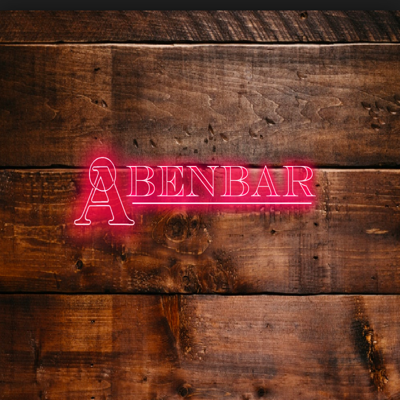
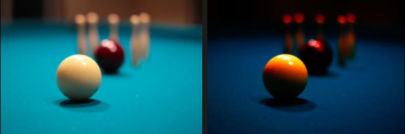

Tema3 Grundlæggende video
03.05.03 redesign
Værktøjer brugt
Link til redesign
Kan ses her: Link
Beskrivelse af koncept & idé
Præmis
Åbenbar er en bar som tilbyder alt fra middagskaffe og brætspil til cocktails og højt humør.
Log-line
Åbenbar har siden November 2018 kombineret madlavning og cocktails med en traditionel værtshus-stemning. Vi undersøger deres opstart samt udvikling og inkorporering af diverse koncepter.
Koncept & Plan
Vores formål ved at arbejde med aabenbar, er at hjælpe dem med at re-designe deres hjemmeside ift. deres egen branding, målsætninger og ambitioner ved at give dem et bud på hvordan deres egen vision kombineret med vores input kan skabe et nyt og anderledes udtryk end hvad de har i forvejen, og forhåbentligt hjælpe dem med at få et klart og personligt udtryk igennem til kunder.
Vi vil snakke med dem om, hvad deres fremtidsplaner for baren er, og derefter hjælpe dem, ved at lave en hjemmeside, der pejler mod deres endelige mål og guide dem mod, den bar de gerne ende med at være.
Målgruppe
Vi befinder os i en målgruppe der hedder 25-80 år. Beslutningen er grundet de forholdsvis høje priser, og de lidt finere drinks, som de reklamere meget for på deres instagram. Men Trods fine cocktails, så kan du også komme og få en lokal nørrebro øl.
Beskrivelse af process og postproduktion
Som designdokumentation har valgt at lave et moodboard med inspirationsbilleder, ud fra fotografen Christina Ortega fotostil. Der har vi haft fokus på de mørke farve, med skarpe kontraster, når vi redigerer vores billeder. I processen med vores billedredigering, har vi valgt at bruge mørke kontraster og farver som sort, mørk rød, mørk, grøn. Derudover har vi brugt RGB farvekoder. Farve valgene er valgt ud fra aabenbars logo, så det passer i stil med hvilke farver man møder når man træder ind i baren.
Analyse af nuværende Website
Analyse
Budskabet der bliver udsendt fra deres hjemmeside, strider umiddelbart en smule imod hvordan selve baren ser ud. Abenbar præsentere sig selv via deres hjemmeside, som en meget minimalistisk cocktailbar, hvor der bliver serveret mad, hvor det mest af alt i virkeligheden, minder om et klassisk brunt bodega.
Fotostil
Abenbars fotostil strider imod den vibe, som de gerne vil skabe. De bruger sløret close-up billeder mad elementer som citroner, radisser og coctails som ikke er fra baren. De prøver at skabe en stemning af fin-resturent, som strider overens med den vibe, som er på baren.
Styletile

Dokumentation til virksomhedsvideo
Interviewguide - Spørgsmål til Aabenbar
- Hvorfor/hvordan besluttede du/i jer for, at opkøbe Fluesmækkeren, og gøre det til Aabenbar?
- Hvad er Aabenbar?
- Hvad er jeres/din vision for, hvordan baren ender med at se ud?
- Hvad er jeres baggrund?
- Hvor mange er i om baren?
- Hvem leder aabenbar?
- Hvilke roller har i hver især?
- Hvad har i lavet tidligere / inden i startede aabenbar
- Hvad er jeres vision for aabenbar?
- Hvilke ændringere har du i tankerne, der skal foretages i en nær fremtid?
- Hvilke renovationer har i foretaget siden i overtog åbenbar?
- Har i andre renovationer planlagt?
- Hvilke events tilbyder i her på aabenbar?
- Hvad gør jer unikke/specielle?
- I siger i har tænkt jer at køre en form for bistro, hvad for noget mad har i tænkt jer at putte på menuen?
- Hvordan adskiller i jer fra andre barer/caféer?
- Hvilke udfordringer har i haft i forbindelse med åbningen af aabenbar?
- Hvad har i som næste projekt?
- Hvilken målgruppe prøver i at tiltrække?
- Er der nogen kunder i ikke er ligeså interesserede i?
- Hvordan føler i at i er blevet modtaget efter rebrandingen?
- Hvad synes i om jeres nuværende lokation i København?
- Ville i gerne være tættere på centrum? Hvorfor?
- Hvordan ser aabenbar ud som færdiggjort projekt?
- I har umiddelbart et meget bredt fokusområde/koncept, hvilke problematikker har der været med at skabe sammenhæng imellem cocktails, morgenmad/frokost, sportsbar og billiard?
Interviewet er slut.
- Hvad tænker du om det der er blevet sagt, har du noget du ønsker at tilføje, eller nogle tanker vi ikke er kommet ind på endnu?
Storyboard

Udkast til redesign


Responsiv video
HTML eksempel med tilhørende CSS

Test resultater

BERT
5 sekunder ny test
Hvad er dit første indtryk af siden?
Logoet, Stranger Things.
Hvad handler siden om?
Bar, Bodega, Spillecafé.
Beskriv siden med et ord, Cozy vibe, rustik, moderne, Sci-fy, Traditionel, Natteliv.
Hvilken stemning fanger du?
Cozy, mørke læderstole, Hyggelig, Cool, Natclub
Lighthouse Audit

Reflektion
Vores vision med redesignet var at skabe en sammenhæng mellem værtshuset og deres hjemmeside. Så man får den barstemning, når man besøger deres nye hjemmeside som er på selve værtshuset, istedet for den cafe stemning, som var der før. I forhold til vores design proces, så lavde vi et trello board, med alle vores task, så vi havde et overblik over hvilke ting vi skulle have færdigt. vi har haft små udfordringer undervejs, bla. så har vi ikke fået git hub til at fungere, det har skabt nolge frustationer undervejs i koden. Da man kun kunne kode en af gangen. vi gik efter at skabe en simple men stilfuld hjemmeside,hvor man får den hyggelige barstemning.
GIT versions historik